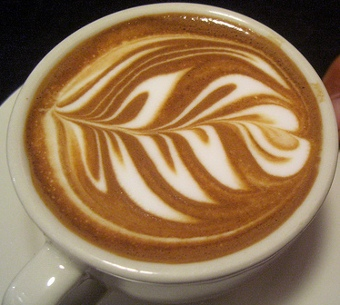

Czym jest Latte Art?
 Latte Art to nie tylko uczta dla smakoszy kawy, ale rowniez spelnienie artystycznej wizji utrwalonej w spienionym mleku. Cappuccino wprawi nas w doskonaly nastroj kiedy zdamy sobie sprawe z tego, ze piekno i doskonalosc trwac beda tak dlugo, jak dlugo przetrwaja pecherzyki powietrza. A moze jednak nie…?! Latte Art to mozliwosc stworzenia na niepozornej piance mlecznej: serca, postaci oraz nieograniczonej ilosci fantastycznych wzorow. Czy znasz lepszy sposob na spedzenie niedzielnego popoludnia? Nie sadze… Wystarczy, ze poznasz swiat Latte Art, miejsca – gdzie zwykle i ekscentryczne zdarzenia przeplataja sie jak temperatura, od goracego temperamentu zaangazowanego artysty po zimne i metodyczne postepowanie przy wykonywaniu konkretnego rodzaju kawy. Zerknij na nasza strone, przeczytaj artykuly, obejrzyj filmiki i zobacz jak szybko mozesz nauczyc sie byc „kawowym artysta”. Bo przeciez tak niewiele dzieli Cie od poznania tajnikow Latte Art. W Latte Art wszysvdfvdfvtko rozpoczyna sie od przygotowania idealnej filizanki kawy. Espresso przeniesie nas w kraine mrocznej kawy. Nalezy pamietac, ze jedynie na prawidlowo wykonanym, prawdziwym espresso tworzy sie warstwa brazowej cremy. Tylko takie espresso nadaje sie do przygotowania Latte Art. Pamietaj, ze jesli pozostawisz swoje espresso na dluzej niz kilka minut mozesz utracic idealna brazowa creme, ktora jest niezbedna do tworzenia Latte Art. W kolejnym etapie do przyrzadzenia Latte Art potrzebujemy delikatnej mlecznej pianki. Istnieje wiele sposobow jej przygotowania i tyle samo opinii specjalistow. My jestesmy zwolennikami tlustszego mleka, ktore wedlug nas tworzy wieksza pianke. Uwazamy rowniez, ze krotkotrwale schlodzenie pojemnika z goracym mlekiem (spieniacza) w lodowce, zapobiega temu aby pianka stala sie zbyt goraca. Pamietajmy, ze nie wolno zagotowac mleka! W nastepnych artykulach postaramy sie bardziej szczegolowo opisac techniki i sposoby spieniania mleka, aby powstala idealna pianka do Latte Art. Jakkolwiek piekno i perfekcja nie trwaja nigdy wiecznie, warto chociaz przez chwile zachwycic sie nim w samodzielnie przygotowanej filizance kawy. Latte Art jest znakomitym sposobem rozpieszczania swoich kubkow smakowych, umozliwia wzbogacanie wiedzy o kawie i sposobach jej przyrzadzania, ale rowniez pozwala zrobic ogromne wrazenie na znajomych, ktorzy zachwyceni „obrazkami” wyczarowanymi przez nas na kawie nie beda mogli od niej oderwac zarowno wzroku, jak i ust. Nie ukrywamy, ze Latte Art mozna zaliczyc do jednego ze sposobow pozwalajacych poczatkujacym odkryc w sobie dusze artysty. Nie jestes w tym jednak osamotniony. Tak jak ty, my rowniez poszukujemy i odkrywamy dopiero tajniki kawy oraz Latte Art. Moze sprobujemy razem?Wykonał:Vitalii Shurkhal